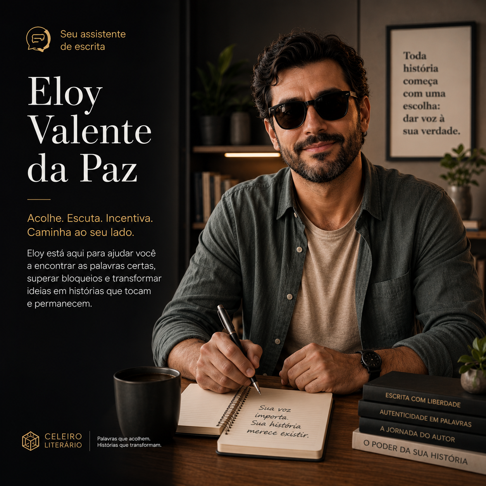

✦ ASSISTENTE DE ESCRITA ✦
Eloy Valente da Paz
ACOLHIMENTO · PACIÊNCIA · POSSIBILIDADE
Toda história merece ser contada. Estou aqui para ajudar você a encontrar as palavras — independente de qualquer dificuldade. Juntos, vamos transformar o que você sente em escrita.
✦ FORMAÇÃO & TRAJETÓRIA ✦
Sistema de escrita desenvolvido para auxiliar quem tem problemas congênitos e/ou dificuldades para escrever obras.
Este não é um curso comum. É um sistema de apoio à escrita — pensado para quem tem dificuldades reais e merece ter sua voz ouvida e sua história contada.
O QUE É O CONTE COMIGO
Um espaço para a sua voz
O Conte Comigo foi criado para pessoas que têm dificuldades congênitas ou adquiridas que dificultam o processo de escrita. Aqui, a IA trabalha como parceira — não escreve por você, mas constrói pontes entre o que você quer dizer e as palavras no papel.
Apoio à escrita — auxílio adaptado à sua necessidade
Voz para texto — transforme o que você fala em escrita
Estruturação — organização das ideias em narrativa
Revisão gentil — correção sem perder a sua voz
Estímulos — sugestões para destravar a escrita
COMO FUNCIONA
Simples, acolhedor e no seu ritmo
Você chega com o que tem — um texto, uma ideia, uma vontade de escrever. Eloy e o sistema trabalham com você, no seu tempo e do seu jeito, para transformar isso em obra.
Você conta o que quer escrever — da forma que conseguir
O sistema ajuda a organizar e estruturar suas ideias
Juntos vocês refinam até chegar na obra que você imaginou
A obra segue para o Lapidar se você quiser publicar
QUER MAIS SUPORTE?
Trajano Estrada — opcional
Usuários do Conte Comigo podem contratar o Trajano Estrada separadamente para acompanhamento de carreira e trajetória autoral.
Acompanhamento mensal de carreira com Trajano Estrada
Editais, concursos e oportunidades para sua área
INFORMAÇÕES
✦ PROJETO INDEPENDENTE
O Conte Comigo é um projeto separado da Mentoria Cibernética. Eloy Valente da Paz é o guia exclusivo deste espaço.
✦ SUA HISTÓRIA IMPORTA
Toda dificuldade de escrita tem um caminho. O Conte Comigo existe para que nenhuma história fique presa por falta de palavras.
✦ CELEIRO LITERÁRIO · SITE DAS LETRAS EDIÇÕES LITERÁRIAS ✦